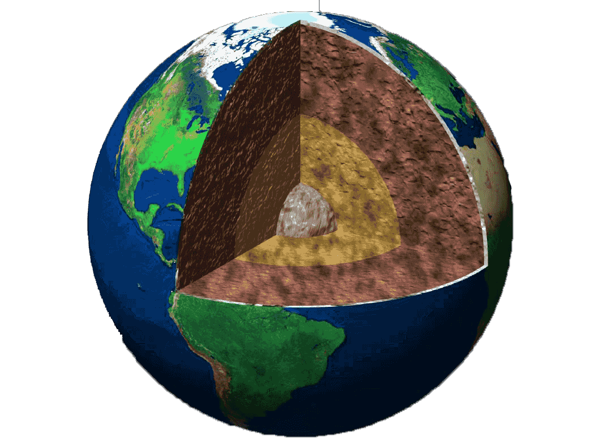

Geology is the science comprising the study of solid Earth, the rocks of which it is composed, the materials of which it is made, the structure of those materials, and the processes acting upon them. Geology can also refer generally to the study of the solid features of any celestial body (such as the geology of the Moon or Mars). Geology gives insight into the history of the Earth, as it provides the primary evidence for plate tectonics, the evolutionary history of life, and past climates. An important part of geology is the study of how Earth’s materials, structures, processes and organisms have changed over time. In modern times, geology is commercially important for mineral and hydrocarbon exploration and exploitation and for evaluating water resources. It is publicly important for the prediction and understanding of natural hazards, the remediation of environmental problems, and for providing insights into past climate change. Geology plays a role in geotechnical engineering and is a major academic discipline
Earth science is an all-embracing term for the sciences related to the planet Earth. It is arguably a special case in planetary science, the Earth being the only known life-bearing planet. There are both reductionist and holistic approaches to Earth sciences. The formal discipline of Earth sciences may include the study of the atmosphere, hydrosphere, oceans and biosphere, as well as the solid earth. Typically, Earth scientists will use tools from physics, chemistry, biology, chronology, and mathematics to build a quantitative understanding of how the Earth system works, and how it evolved to its current state. Geology describes the rocky parts of the Earth's crust (or lithosphere) and its historic development. Major subdisciplines are mineralogy and petrology, geochemistry, geomorphology, paleontology, stratigraphy, structural geology, engineering geology, and sedimentology.
Geologists use a number of field, laboratory, and numerical modeling methods to decipher Earth history and understand the processes that occur on and in the Earth. In typical geological investigations, geologists use primary information related to petrology, stratigraphy, and structural geology. In many cases, geologists also study modern soils, rivers, landscapes, and glaciers; investigate past and current life and biogeochemical pathways, and use geophysical methods to investigate the subsurface.
There are lots of different tools, equipment, and gear that geologists have access to. What tools they use depends on the specific job and the type of geologist.